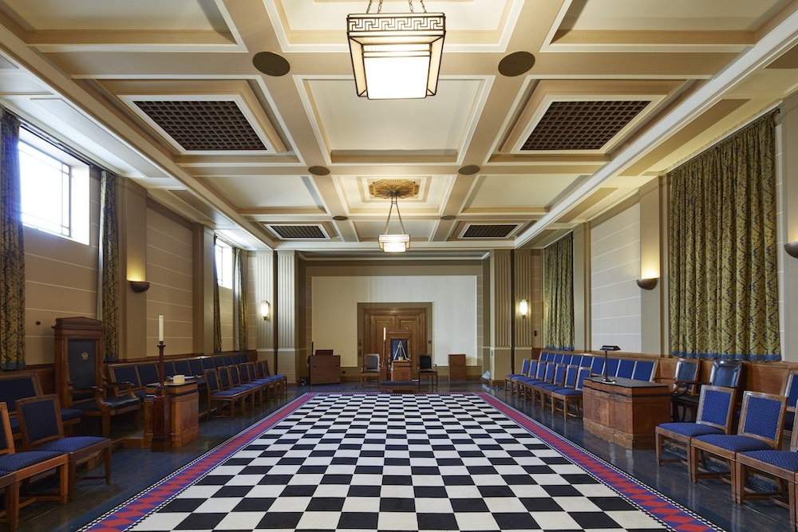

Saturday Freemasonry in Oxford
Blockley Lodge meets five times per year on the second Saturday in February and March, the last Saturday in July, and the third Saturday in October and November.
We meet at the Oxford Masonic Centre, Cardinal House, 2-4 Baldon Lane, Marsh Baldon, Oxford OX44 9LT. The centre is accessible from the city using the X40 River Rapids Bus. There is also ample secure car parking at the centre.
Our meetings usually start at midday and last around one hour. After the meeting, we have either a formal lunch, buffet or (weather permitting) a BBQ. The Saturday format allows for a relaxed environment for busy working professionals as well as those who travel from further afield. The Lodge also holds other social events during the year to which guests and non-Masons are always welcome.
Masonic visitors are warmly invited to attend our Lodge meetings. Please contact the Lodge Secretary to arrange your visit.